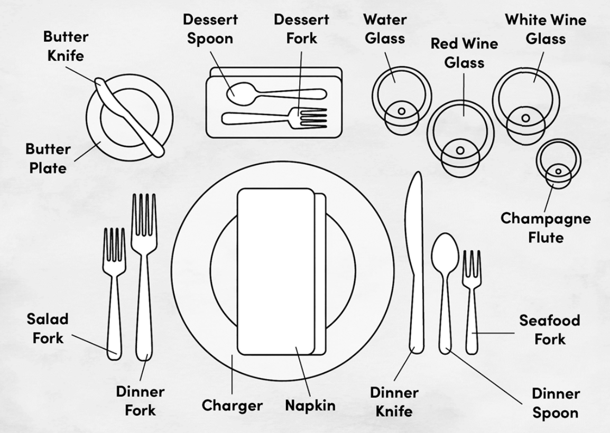
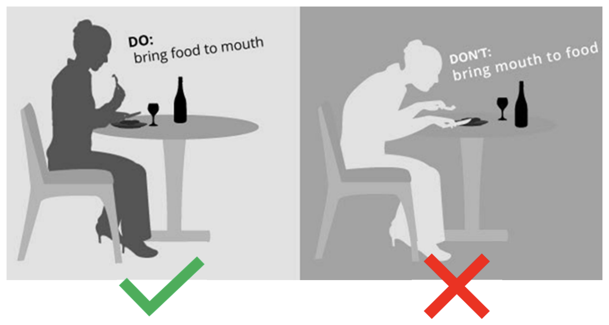

Dining Etiquette

Professional Skills Module Conducted by Mrs. Ishari Ravihari
The Professional Skills module, led by the esteemed Mrs. Ishari Ravihari, offers an insightful and engaging experience aimed at empowering individuals with the essential skills for success in today's fast-paced professional world. With her extensive expertise and dynamic approach, Mrs. Ravihari guides students through the crucial aspects of soft skills that go hand-in-hand with technical expertise to shape well-rounded professionals.

Dining Etiquette
Dining etiquette involves using utensils properly, waiting for everyone to be served, and showing respect to others at the table. It’s essential for leaving a good impression.
Key Takeaways
- Sit straight, no elbows on the table.
- Napkin on lap when sitting down and use it to dab (not wipe).
- Wait for others (especially the host).
- Chew with your mouth closed, no speaking.
- Excuse yourself when standing up when necessary.
- Fork on the left, spoon on the right.
- Use utensils from the outside in.
- Keep conversation light.
- Don’t break bread with a knife.
- Hold wine from the stem.
- Pour wine about half the glass.
- Scoop outwards from the soup bowl.
- Take a butter dish if not separately provided.
- Don’t spread butter on all bread pieces at once.
The Formal Place Setting
Posture
more details about the Dining Etiquette
Watch the Video to more info about Dining Etiquette
Click the button below to view more Details about the Dining Etiquette
View PDF